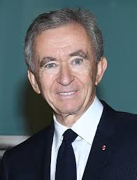

FRNACE BIGGEST BILLIONAIRE:- BERNARD ARNAULT

Bernard Arnault is a French billionaire businessman and the chairman and CEO of LVMH Moët Hennessy Louis Vuitton, the world's largest luxury goods conglomerate.
As of June 2025, he is among the top five richest individuals globally, with a net worth estimated between $153 billion and $178 billion, according to Bloomberg and Forbes .
👶 Early Life & Education
Born: March 5, 1949, in Roubaix, France.
Education: Graduated from École Polytechnique, France's premier engineering institution.
Family Background: His father, Jean Léon Arnault, owned the civil engineering company Ferret-Savinel .
🧑💼 Career Milestones
Ferret-Savinel to Férinel
In 1971, Arnault joined his father's company, Ferret-Savinel, and became chairman in 1978.
He shifted the company's focus from construction to real estate, renaming it Férinel Inc.
Acquisition of Christian Dior
In 1984, with $15 million of his own funds and additional backing, Arnault acquired the bankrupt textile company Boussac Saint-Frères, which owned Christian Dior.
He revitalized Dior, laying the foundation for his future luxury empire .
Formation and Leadership of LVMH
In 1987, Arnault was invited to invest in LVMH, formed by the merger of Louis Vuitton and Moët Hennessy.
By 1989, he became the majority shareholder and CEO.
Under his leadership, LVMH expanded to encompass over 75 luxury brands, including Louis Vuitton, Christian Dior, Fendi, TAG Heuer, Tiffany & Co., and Dom Pérignon .
💰 Wealth & Recognition
Net Worth: Estimated at $153 billion (Bloomberg) to $178 billion (Forbes) as of June 2025 .
Global Ranking: Consistently ranks among the top five richest individuals worldwide.
Influence: Recognized as one of the most powerful figures in the luxury fashion industry.
👨👩👧👦 Family & Succession Planning
Arnault has five children, all of whom hold significant roles within LVMH:
Delphine Arnault: CEO of Christian Dior Couture.
Antoine Arnault: CEO of Christian Dior SE.
Frédéric Arnault: CEO of Loro Piana.
Alexandre Arnault: Deputy CEO of the Wines & Spirits division.
Jean Arnault: Involved in LVMH's watch division.
In April 2025, LVMH shareholders approved extending the CEO age limit to 85, allowing Arnault to remain at the helm until at least 2034 .
🏢 LVMH in 2025
Revenue: €86.2 billion in 2023, a 9% increase from the previous year .
Employees: Over 213,000 worldwide.
Recent Developments:
In April 2025, Arnault reported that economic turmoil, including tariffs, affected LVMH's performance starting in March .
The company is focusing on its high-end product segments to navigate economic challenges.
🎨 Personal Interests
Arnault is an avid art collector and has been instrumental in promoting contemporary art in France.
He established the Fondation Louis Vuitton, a museum and cultural center in Paris dedicated to contemporary art.